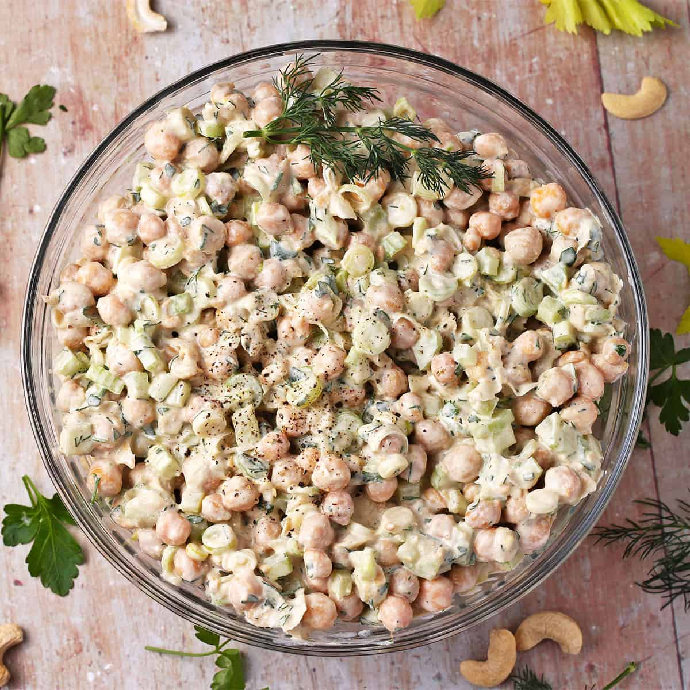

Chickpea Salad

Summer is here, and this recipe is just what the doctor ordered! If you're looking for
something clean & fresh that makes your heart happy look no further. You won't find a better
work-to-taste ratio than this quick bite.
Three ingredients, a few staple condiments/seasonings, and about 10-15 minutes of your time is
all it takes to make this dish. Not much to say other than get started - you're missing out!
Ingredients
- 1 can of chickpeas
- ¼ diced red onion
- 1/3-1/2 diced dill pickles
- 3 Tbsps yellow mustard
- 2 Tbsps Vegan mayo (or preferred mayo)
- Kosher sea salt, to taste
- Freshly ground black pepper, to taste
- Lemon pepper seasoning, to taste (optional)
Instructions
- Drain and rinse the can of chickpeas; Roughly mash until desired texture is achieved.
- Dice and add the onions and pickles; mix until homogenous.
- Add your mayo and mustard; mix until homogenous
- Add your salt, pepper, and optional lemon pepper to taste; enjoy!